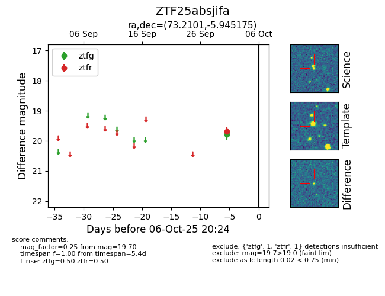

FINK: ZTF25absjifa
Lasair: ZTF25absjifa
ALeRCE: ZTF25absjifa
ZTF25absjifa (ztf,fink)
equatorial (ra, dec) = (73.2101,-5.94518)
galactic (l, b) = (204.2381,-29.02106)

last ztfg=19.79, ztfr=19.70
1 ztfg, 1 ztfr detections